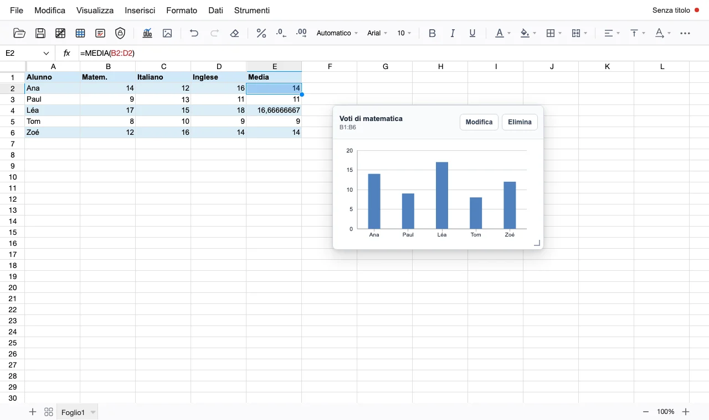
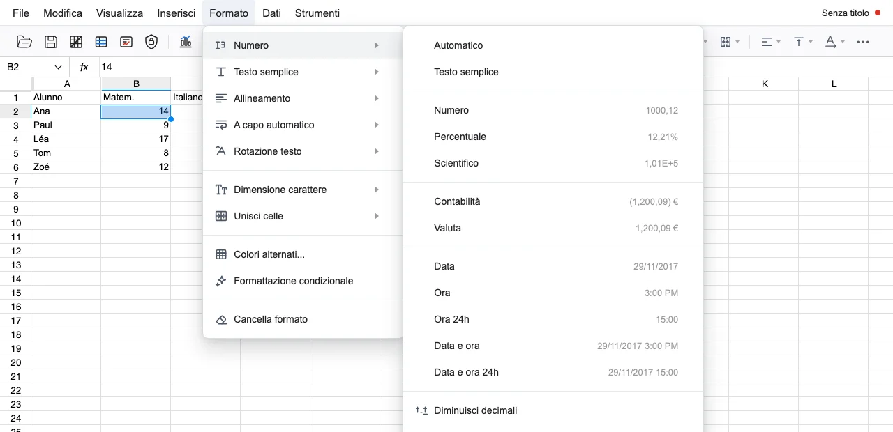

L’interfaccia

Dall’alto in basso: la barra dei menu, la barra dei pulsanti, la barra della formula, il foglio, le schede dei fogli e lo zoom.
I menu
| Menu | Contenuto |
|---|---|
| File | aprire, salvare, stampare |
| Modifica | annullare, ripetere, riempire in basso, a destra |
| Visualizza | griglia, bloccare |
| Inserisci | immagine, grafico, casella di controllo, elenco a discesa |
| Formato | numero, testo, allineamento, unione, colori alternati, formattazione condizionale |
| Dati | ordinare e filtrare |
| Strumenti | proteggere, questo manuale (Manuale d’uso), DocTools, codice sorgente, versione (Informazioni...) |
Un segno di spunta indica un’opzione attiva: griglia visibile, celle bloccate, grassetto, filtro, cartella protetta.

La barra dei pulsanti
| Pulsante | Funzione |
|---|---|
| aprire, salvare | |
| mostrare o nascondere la griglia | |
| colori alternati | |
| formattazione condizionale | |
| proteggere; azzurrato quando la cartella è protetta | |
| inserire un grafico | |
| inserire un’immagine | |
| annullare, ripetere | |
| cancellare la formattazione | |
| percentuale, meno o più decimali | |
| Automatico, Arial, 10 | formato numerico, carattere, dimensione |
| grassetto, corsivo, sottolineato | |
| colore del testo, dello sfondo | |
| bordi, unione | |
| allineamenti, rotazione, testo a capo | |
| bloccare | |
| somma automatica e altre formule | |
| ordinare e filtrare |
La freccetta di un pulsante apre le sue scelte; il pulsante stesso ripete l’ultima. In una finestra stretta, gli ultimi pulsanti sono dietro .
La barra della formula
- A sinistra, la casella del nome: l’indirizzo della selezione, o il nome dell’intervallo. La sua freccia elenca gli intervalli denominati e apre la gestione dei nomi.
- A destra di fx, il contenuto della cella, formula compresa: si può modificare lì.
Il foglio
- Il clic destro apre un menu secondo il posto: cella, intestazione di colonna o di riga, scheda del foglio.
- Il foglio iniziale ha 84 righe e 60 colonne (da A a BH). Se ne aggiungono con il clic destro, Inserisci (righe e colonne).
- Il quadratino blu all’angolo della selezione riempie.
Schede e zoom
In basso, aggiunge un foglio, li elenca tutti (i fogli). A destra, − e + regolano lo zoom; un clic sulla percentuale propone da 10 % a 400 %.
Annullare
o Ctrl Z annulla, , Ctrl Y o Ctrl Maiusc Z ripete: immissioni, incollature, formattazioni, inserimenti. La cronologia riparte da zero quando si apre una cartella, si mostra o nasconde la griglia, si protegge la cartella, o si aggiunge un nome o una regola di formattazione condizionale. I grafici non ne fanno parte: si modificano o eliminano con i loro pulsanti.